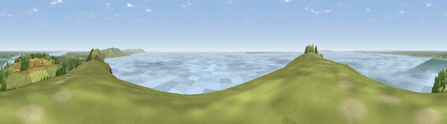

West High Down
#1007 in England · top 11% of its area beats it · near TotlandWhere it is
The exact computed spot (SZ 30789 85022). Click the marker for map links.
The view, rendered

A 360° render of this exact spot computed from the terrain model, tree cover and land cover — summer colours, afternoon light, calibrated against photographs of famous viewpoints. Real trees, hedges and buildings will differ in detail.
The panorama
Grey silhouette: terrain skyline in each direction (720 bearings, Earth curvature and refraction included). Dashed green: skyline with trees (+15 m) and buildings (+8 m) as obstacles. Blue strip: how far the ground is visible on each bearing.
Where the view opens
Wedge length = distance to the farthest visible ground on that bearing (vegetation-aware). Rings at 10, 25 and 50 km.
What fills the view
54% water · 27% grassland · 13% woodland · 4% built-up · 2% cropland ·
Angular shares of the visible panorama (visual magnitude), not map area. Landscape diversity 0.52 (0–1 Shannon).
Key numbers
More beautiful places nearby
The staircase of upgrades: each row has a higher view potential than everything closer. Driving times are estimates from straight-line distance, calibrated against real road routing — check an actual route before setting out.
| Place | Direction | Drive | Score |
|---|---|---|---|
| Tennyson Down | ENE · 2 km | ~5 min | 83.2 |
| Viewpoint near Brook | E · 7 km | ~15 min | 84.2 |
| Brook Down | E · 8 km | ~16 min | 85.3 |
| Mottistone Down | E · 10 km | ~19 min | 87.2 |
| St Catherines Hill | ESE · 20 km | ~34 min | 87.6 |
| Viewpoint near Chale | ESE · 20 km | ~34 min | 88.3 |
| Viewpoint near Niton | ESE · 21 km | ~35 min | 89.2 |
| Viewpoint near West Bexington | W · 76 km | ~99 min | 89.5 |
50.66406, -1.56574 · source: osm peak · position refined by local search. Computed location — check access rights before visiting.